48th Berlin
International
Film Festival (1998)
feature by Eddie
Cockrell
Notes from the Festival
These are capsule reviews of selected films caught
during the 48th Berlin International Film Festival, 11 – 22 February 1998. Each film
– referred to by it's English title as opposed to the original language – is
followed by the name of the section in which it appeared in parentheses. Longer reviews of
some films will follow, based on US festival dates and/or domestic acquisition and
distribution schedules.
With literally hundreds of films available throughout the day (and well into the
night), how does one decide what to see? Research, for one thing: the Berlin festival is
unsurpassed in available documentation – presskits circulate on the higher-profile
films (easily obtainable via the well-staffed pressbox area), and the daily festival
magazine offers capsule reviews, background information and interviews. Networking helps,
among friends and colleagues who may have seen certain films at previous festivals or, as
the festival progresses, earlier showings of films. Finally (and perhaps most obvious),
one's particular agenda dictates the schedule: in this case, the goal was to see certain
international films that might appear at two east coast festivals that had offered note
writing assignments (this explains why so many of the following films were screened in the
market section, which is traditionally skewed towards films that have already played other
festivals and are in search of buyers based on reputation).
So, to the films:
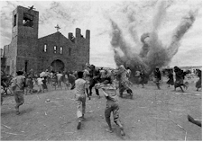An absorbing three-hour
epic marred only by the emotionally high-pitched dramatic interludes, Sergio Rezende's The
Battle of Canudos (Panorama) came to Berlin as last year's domestic box office
champion in Brazil – and, at $6 million, the most expensive in the history of the
resurgent industry there. The film is based on a bloody episode in the country's history a
little over a hundred years ago, as government soldiers clashed with the 25,000 residents
of the eponymous village over their fealty to religious leader Antonio Conselheiro (played
by José Wilker, star of Carlos Diegues' 1979 success Bye Bye Brazil). Filmed with
undeniable force and laced with extraordinary battle scenes, the film loses direction and
energy during the melodramatic lulls in the action, as a daughter of the village defies
her devout father and marries a soldier who becomes one of the attacking forces. "The
film talks about religious fanaticism and the conflict between two worlds," explained
Rezende in Berlin. "Sadly, in many countries this theme continues to be as relevant
today as in the past." Perhaps the movie plays better as a four-part television
presentation, which the press flier indicates is available for international sales.
Beware of guilty pleasures, as they're liable to lead to
disappointment. This was the lesson of The Big Lebowski
(Competition), which had it's world premiere screening complete with co-star John Goodman
and co-creators Joel and Ethan Coen in attendance. 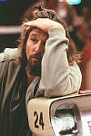After the humanistic lull of Fargo
(which was built around Oscar-winning Frances McDormand – Joel's wife), the brothers
are back in full sardonic mode in this surrealistic black comedy of mistaken identity,
kidnapping and who knows what else (they're sure not telling). Jeff Bridges is fitfully
funny as Jeff "The Dude" Lebowski, a laid-back stoner in early 1990's Los
Angeles who becomes the target of all sorts of lowlife elements when he is mistaken for
another Lebowski, an unrelated Pasadena millionaire whose wife has been kidnapped. Can The
Dude stay awake long enough to find the missing Bunny (for that is the millionaire's
wife's name)? Can the audience stay awake long enough to see this absurdist reduction of The
Big Sleep to it's inevitably illogical conclusion? As in Barton Fink, the Coens
here exhibit a contemptuousness towards their characters as well as an almost open
hostility towards anyone unfortunate to wander into the theater (ironically, Barton
Fink won the grand prize at Cannes – where The Big Lebowski was expected
to premiere). Goodman is boisterous as Dude's buddy Walter, but Steve Buscemi, Julianne
Moore, Peter Stormare and John Turturro barely register in support as cryptic, one-joke
characters. And the lesson? Never spend time watching a movie that can be seen after a
festival.
 Much the same kind of criticism can be applied to The Big One
(Forum), the latest screed from shambling do-gooder Michael Moore. Filmed during the
three-month 1996 book tour for "Downsize This!," the film finds the petulant
mischief-maker attempting to meet at least one CEO of a successful company in the 50
cities he blows through, with side trips to the Payday candy factory in Centralis,
Illinois and visits with Cheap Trick's Rick Nielsen and a prison inmate who answers
customer inquiries on the TWA toll-free telephone line. As in Roger & Me, much
of this material is fluid and funny (particularly the climactic meeting with an obviously
uncomfortable Phil Knight at Nike), and there's no denying the legitimacy of the cause:
championing the rights of the average working stiff. But Moore's credibility is severely
undercut by his overly subjective and often offensive manner (a sequence where he
persuades a clueless security guard to throw one of his regional handlers out of a mall is
an appalling low point). Moore's heart is in the right place, but he hasn't yet figured
out that this Crusader Rabbit routine can be run by just about anyone with an attitude and
a camera crew; the failure of both his television show and dramatic feature debut (Canadian
Bacon) suggests that like a poor musician, Moore only has one note but figures if he
plays it loud enough, people will listen.
Much the same kind of criticism can be applied to The Big One
(Forum), the latest screed from shambling do-gooder Michael Moore. Filmed during the
three-month 1996 book tour for "Downsize This!," the film finds the petulant
mischief-maker attempting to meet at least one CEO of a successful company in the 50
cities he blows through, with side trips to the Payday candy factory in Centralis,
Illinois and visits with Cheap Trick's Rick Nielsen and a prison inmate who answers
customer inquiries on the TWA toll-free telephone line. As in Roger & Me, much
of this material is fluid and funny (particularly the climactic meeting with an obviously
uncomfortable Phil Knight at Nike), and there's no denying the legitimacy of the cause:
championing the rights of the average working stiff. But Moore's credibility is severely
undercut by his overly subjective and often offensive manner (a sequence where he
persuades a clueless security guard to throw one of his regional handlers out of a mall is
an appalling low point). Moore's heart is in the right place, but he hasn't yet figured
out that this Crusader Rabbit routine can be run by just about anyone with an attitude and
a camera crew; the failure of both his television show and dramatic feature debut (Canadian
Bacon) suggests that like a poor musician, Moore only has one note but figures if he
plays it loud enough, people will listen.
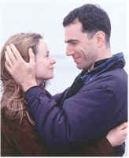Okay, so the opening night film The Boxer (Competition) was
already playing commercially well before the festival, but one can't see everything –
and besides, one always likes the see the opening night film to gauge the mood of the
audience (not to mention the jury, the 1994 edition of which gave the Golden Bear grand
prize to the previous collaboration between director Jim Sheridan and actor Daniel
Day-Lewis, In the Name of the Father). Although it didn't win any official festival
awards (a 25-member jury from the daily "Berliner Morgenpost" named it "the
best public entertainment film of quality"), The Boxer was well-received
indeed, as befits it's serious intentions. Daniel Day-Lewis is Danny Flynn, an IRA
activist who returns home after 14 years in prison. Deciding to reopen a closed gymnasium
that featured a popular youth boxing program, Danny also is drawn into a reignited
relationship with Maggie (Emily Watson), with whom he'd been involved before imprisonment
but is now married to his best friend. Although the relatively tepid showing of the film
in North America has been credited to the weighty social issues and the American ignorance
of them, The Boxer is an earnest, involving and ultimately rewarding film that
should do well on video (as more thoughtful films tend to do).
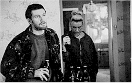A highlight of the festival that went curiously unrewarded by the
jury, the Australian drama The Boys (Competition) features an extraordinary
performance by David Wenham (who also co-produced) as Brett Sprague, one of three brothers
in a poor dysfunctional family in contemporary Sydney. Covering essentially the 24 hours
between Brett's release from prison and reincarceration, the film uses an exhilaratingly
complex flashback and flash forward structure to illustrate events that happened on either
side of the fateful day. The movie is based on a 1991 play that in turn takes as it's
hideous inspiration the brutal assault and murder of a nurse in the Australian city some
years before. Toni Collette, so beguiling in Muriel's Wedding, is pure raw emotion
as Brett's long-suffering girlfriend, while Lynette Curran, with Wenham the only holdover
from the stage production, is affecting as the ineffective mother of this deadly trio.
Shot in claustrophobic close-ups and without any explicit violence, The Boys is
emotionally devastating nonetheless, using a real-life tragedy as the springboard for a
story of mounting frustration and rage that could well be set in just about any country in
the world.
A strong return to the eccentric soul of it's 1960s heyday, the
Czech television production Buttoners (European Film Market) is a quirky, hugely
enjoyable treatise on fate, coincidence and redemption that uses a late-night radio talk
show to stitch together six seemingly unrelated but actually interlocking stories. From
the opening sequence, which juxtaposes a heated discussion of the weather and profanity in
Kokura, Japan as the Enola Gay prepares to bomb the city but is diverted at the last
second to Hiroshima, through to the final episode, which finds the American pilot of the
craft summoned via seance to speak on the radio program of forgiveness and tolerance, Buttoners
has all the energy, black comedy and self-indulgent irony of the best Czech movies (Jiri
Menzel is even mentioned explicitly in one sequence). Winner of a Tiger Award at the
recent 33rd International Film Festival Rotterdam, Buttoners is sure to do the
North American film festival circuit later this year and in early 1999, most probably
commencing with a premiere screening at the Toronto festival this fall.
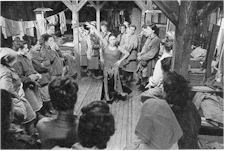Unfortunately, the new
Slovak cinema isn't yet as prolific or successful as that of it's former confederate, and
although it tries mightily for the same kind of ironic absurdity as Buttoners, The
Camp of Fallen Women (Panorama) is ultimately undone by a slack pace, cliched
characters and an unfocused script. The time is the late 1940s, and prostitutes are being
rounded up on the streets of Bratislava (the Slovak capital) for transport to a forced
labor camp for "re-education." Once there they become swept up in the power
struggle endemic to all such prisons and camps: the unnamed Commandant (Stefan Kvietik) is
an ok sort, but his aide Lieutenant Plazak (Jozef Vajda) is a sadistic hard-liner whose
efforts are tempered only slightly by cynical Dr. Zigmund, a Jew who apparently dates from
the days when the camp was used to detain them instead of general undesirables. The movie
has a genuinely intriguing premise, but it is short-circuited at every turn by Anton
Balaz' pokey script (adapted from his novel, which may be a large part of the problem) and
the diffident direction of Laco Halama. And, fatally, the handful of women on whom the
film dwells never emerge as distinctive or empathetic characters, leaving the whole
enterprise lifeless and occasionally distasteful. Neither fish nor fowl, The Camp of
Fallen Women is nowhere near as trashy as the title might lead the consumer to
believe, nor as socially significant as a movie on this provocative subject could have
been.
One of two films on the great director to be
featured in Berlin this year, Eisenstein: The Master's House (Forum) uses
documentary footage of the filmmaker at work and in repose as well as unconnected
historical images to evoke the life and times of perhaps the greatest theoretician the
movies has ever known. Together with the second work, Oleg Kovalov's Sergei Eisenstein:
Mexican Fantasy (about the making of the uncompleted Que Viva Mexico! and also
shown in the Forum), they provide exhaustive information on Eisenstein's methods, impact
and experiences.
A more contemporary film from the same part of the
world, Vyachelsav Krishtofovich's Ukranian-French co-production A Friend of the
Deceased (European Film Market) illustrates that in the east, the winds of social
change haven't been as benevolent and enriching for all in equal measure. It is that
economic and moral confusion which is at the heart of this fine new film from the director
of Adam's Rib. Long-suffering Anatoli (Alexander Lazarev) is a struggling
Kiev-based translator whose estranged wife still sleeps in their bed and coos into a cell
phone while he makes do on the couch and awkwardly conducts what little business comes his
way on the speakerphone of an otherwise busted handset. When she finally leaves him, his
utter despair manifests itself in odd jobs and a bizarre plot or two. His only salvation
would appear to be two very different women. With Lazarev's perfectly calibrated hangdog
performance balancing the dry, precise tone, Krishtofovich's intentions are clear:
"In Ukrainian," he says, "the word 'love' and the word 'pity' are sometimes
considered synonyms. That is why I made this film about people whom I pity. And whom I
love."
One strong hint that Manhattan-based indie veteran Amos
Poe's mischievous, bloody, hilarious and altogether invigorating new movie Frogs For
Snakes (Forum) is up to more than initially meets the eye is the basic structure,
which offers the conventional opening credits nearly 20 minutes into the picture and quite
literally doesn't want to stop (audiences are advised to keep their seats until the lights
come up to make sure they've really seen the whole thing). A spectacular mixture of Poe's
fiercely independent spirit with recognizably conventional moviemaking elements, Frogs
For Snakes transports such recognizable stars as Barbara Hershey and Harry Hamlin to a
hip, intimate milieu. She's Eva, one of a tangled web of downtown denizens involved in
murder and double-cross – when she's not walking her kids to school, working at a
local greasy spoon or practicing the numerous monologues from classic movies and plays
that punctuate the action. And she's not alone: everybody's doing it, furiously brushing
up for, among other things, the upcoming production of David Mamet's "American
Buffalo" being mounted by local kingpin Al Santana (Robbie Coltrane) – who also
happens to be Eva's ex. It's a grand idea played with knockabout abandon, but then... as
the monologues mount up as quickly as the bodies (a gory bar shootout is a what-the-hell-was-that
highlight), Frogs for Snakes becomes something much deeper, a heartfelt examination
of the creative process that percolates along at with it's own defiant and beguiling pace.
Much of the movie's fun, in fact, comes from watching the actors perform the often lengthy
speeches in character with varying degrees of success – as well as trying to
guess which film or play the monologues come from (standouts include Lisa Marie's
on-purpose groaner from The Hustler and Hamlin's dead-on deathbed recitation from
the Mamet play). Poe's been making this kind of movie both in and out of the mainstream
for over two decades (Subway Riders, Joey Breaker, the script for Rocket
Gibraltar) and it must be a source of bittersweet vindication to see his one-of-a-kind
sensibility co-opted by a newly hipper-than-thou Hollywood. But make no mistake about it: Frogs
For Snakes (the title is explained – but not here) represents the real deal, a
wild and woolly paeon to the durability of family, the passion of expression and the joys
of life in Lower Manhattan.
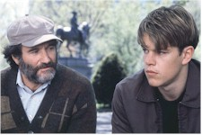With all it's acclaim and Oscar
nominations, one of the chief strengths of Gus Van Sant's Good Will Hunting
(Competition) often gets lost in the hubbub. That would be the storytelling skills and
visual high-rolling of Van Sant himself, who brings to the pleasant underdog tale (by lead
actors Matt Damon and Ben Affleck) the same dreamy – some say druggy – style
that put him on the map with Drugstore Cowboy and My Own Private Idaho.
Should Damon in particular go from his Silver Berlin Bear for single achievement as
co-scripter and actor to Academy Awards in the same categories, it is hoped that he will
remember to dance with who brung him and thank Van Sant for his subtle but inestimable
contribution to the film's success.
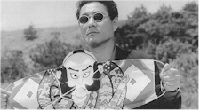Takeshi Kitano employs a more rigorous style for Fireworks
(European Film Market); the Japanese title Hanabi means just that; a hyphen in the right
place splits it into flower ("hana") and fire ("bi") – or, in the
steely morality of this exquisitely cool drama (punctuated by the director's paintings),
life and death. Dedicated Detective Nishi (Takeshi, acting under his popular nickname
"Beat") watches his world collapse, as wife Miyuki (Kayoko Kishimoto) is
diagnosed with a terminal illness just as his partner Horibe (Ren Osugi) is ambushed by
some underworld punks. Faced with a dying spouse and a crippled partner, the moral,
compassionate Nishi impassively puts his house in order the only way he knows how:
decisive, violent action. By turns tender and brutal, Fireworks provides plenty of
them, set against a beautiful but disconcerting mix of urban and rural Japan and scored to
Joe Hisaishi's lush, reflective score. The prolific Takeshi calls film a "luxurious
toy"; Fireworks – already winner of the Golden Lion at the Venice festival and
gathering substantial critical momentum stateside – is one hell of a playtime.
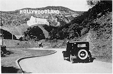In the Canadian-funded documentary Hollywoodism:
Jews, Movies and the American Dream (Panorama), director Simcha Jacobovici uses Neal
Gabler's book "An Empire of Their Own: How the Jews Invented Hollywood" to put
forward the theory that the American dream in studio classics of yesteryear was less a
reflection of the country's history than the idealized fantasies of the first immigrant
moguls, men like Carl Laemmle (Germany), Harry Warner and Sam Goldwyn (Poland), William
Fox and Adolph Zukor (Hungary), and Russia's own Louis B. Mayer. Archival footage and
rare, revealing home movies mix with identifiable film clips to bolster the argument,
which is credible as far as it goes but is often rather more convenient than the
complicated history of the movie business would suggest. Still, this is a natural for
general and specialty festivals and should spark constructive debate wherever it is shown.
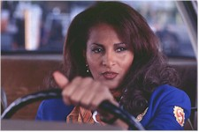Jackie Brown
(Competition) has been reviewed by Nitrate Online, but is worth revisiting briefly
to report that for the most part the international critics "got" the film in a
way their American colleagues didn't. True, the references to vintage cop TV shows of the
1970s don't travel well, but they're not expected to (and these references went over the
head of the majority of critics anyway); what the Berlin audiences responded to was
exactly what director Quentin Tarantino has been criticized for: the controversial
portrayal of black culture and speech – much of which is lifted directly from Elmore
Leonard's novel. The International Jury apparently agreed, awarding Samuel L. Jackson the
Silver Berlin Bear for Best Actor. This is why some directors push for their films to be
accepted in Berlin competition; it's sort of a court of second appeal for movies that
might have been misunderstood and/or misappreciated at home.
In Pal Sletaune's deceptively ramshackle Junk Mail
(European Film Market), a love-starved, ethically impaired civil servant ("Oslo's,
probably the world's, worst postman," says the first-time director) finds a set of
keys and becomes involved in a bizarre conspiracy. With this darkly funny thriller –
winner of the Critics' Week prize at the 1996 Cannes Film Festival – Sletaune has
been hailed as leading a Norwegian New Wave of filmmaking and has been compared to Aki
Kaurismäki and Jim Jarmusch for his skewed view of urban misfits. One critic has already
called the emotional outcasts who lurch through this dry comedy-drama a cross between the
Czech New Wave and David Lynch, and that's a sentiment hard to improve upon. If
off-the-wall humor is what you seek, Junk Mail – which has been selected for
the Film Society of Lincoln Center's New Directors/New Films program later in the spring
and will be distributed in America by Lion's Gate Films – is a special delivery
indeed.
Valery Todorovsky's delicate, absorbing Russian
drama The Land of the Deaf (Competition) was among the most underrated movies of
the festival, prompting immediate reactions of "too long" and
"unfocused" from the critical corps. Few argued the merits of the lead
performers, however: Chulpan Khamatova and Dina Korzun are both mesmerizing as the waif
who escapes a conniving boyfriend and the deaf stripper who befriends her. True, the
gangster elements of the tale ring less true than the deepening friendship between the two
women, but Alexei Aigi's noteworthy score and Yuri Shaigardanov's evocative location
photography go a long way towards aiding the fragile, otherworldly atmosphere Todorovsky
aims for – and hits. Audiences are required to work for their pleasure in The Land
of the Deaf, but their efforts do not go unrewarded.
 This year's prime example of the aging but still
effective term "Europudding," Left Luggage (Competition) marks an assured
directing debut from actor Jeroen Krabbe (The Fugitive) that is at once resolutely
serious and severely undercut by a profoundly miscast leading role. Add to this the
conflicting accents and acting styles of almost every other performer in sight, and the
result is a well-intentioned film that comes across as amateurish in the extreme. The main
culprit is young British actress Laura Fraser, who plays a free-spirited Jewish woman in
1972 Antwerp who reluctantly goes to work as a nanny for the Kalmans, an Orthodox Hassidic
family with five children. As she clashes with Mrs. Kalman (Isabella Rossellini, of all
people, in – of all things – the film's standout performance) and more fiercely
with her husband (Krabbe), Laura also develops a strong bond with their introverted
4-year-old son Simcha (Adam Monty). The closer these two become, and the more successful
Laura is at drawing Simcha out of his self-imposed shell, the more obvious it becomes that
something tragic must happen. Serious subplots involving anti-Semitism, prejudice and
culture clashes are sabotaged at every turn by two-dimensional characterizations (David
Bradley's bigoted building superintendent is the most egregious example), but it is the
wildly overmodulated Fraser who throws the film most out of balance, coming on like a
British cross between Julia Roberts and Alanis Morissette when something must more subtle
is called for. While she may indeed have talent, being asked to carry a film such as this
is a cruel way to break into the business.
This year's prime example of the aging but still
effective term "Europudding," Left Luggage (Competition) marks an assured
directing debut from actor Jeroen Krabbe (The Fugitive) that is at once resolutely
serious and severely undercut by a profoundly miscast leading role. Add to this the
conflicting accents and acting styles of almost every other performer in sight, and the
result is a well-intentioned film that comes across as amateurish in the extreme. The main
culprit is young British actress Laura Fraser, who plays a free-spirited Jewish woman in
1972 Antwerp who reluctantly goes to work as a nanny for the Kalmans, an Orthodox Hassidic
family with five children. As she clashes with Mrs. Kalman (Isabella Rossellini, of all
people, in – of all things – the film's standout performance) and more fiercely
with her husband (Krabbe), Laura also develops a strong bond with their introverted
4-year-old son Simcha (Adam Monty). The closer these two become, and the more successful
Laura is at drawing Simcha out of his self-imposed shell, the more obvious it becomes that
something tragic must happen. Serious subplots involving anti-Semitism, prejudice and
culture clashes are sabotaged at every turn by two-dimensional characterizations (David
Bradley's bigoted building superintendent is the most egregious example), but it is the
wildly overmodulated Fraser who throws the film most out of balance, coming on like a
British cross between Julia Roberts and Alanis Morissette when something must more subtle
is called for. While she may indeed have talent, being asked to carry a film such as this
is a cruel way to break into the business.
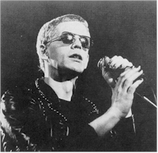Set for airing on public television stations in the US later in the
spring, Lou Reed: Rock and Roll Heart (Panorama) was probably doomed from the start
to be static, given the electric nature of it's subject. From his early days in a New York
band "so bad we had to change our name every week to get work," through the
heyday of The Velvet Underground and Andy Warhol's downtown factory scene and on to his
varied and often cryptic solo career (yes, there's a bit on Metal Machine Music), Reed's
intensity comes through loud and clear in this rigorously chronological survey. Yet for
all it's music-fuelled energy, the movie's gambit of using then-and-now portraiture to
frame it's interviewees blows up in the face of director and turns a kinetic career into a
progression of talking heads. Having said that, the movie is also a priceless addition to
available film and documentation on the subject, who is one of the greatest composers and
difficult performers of the late 20th century.
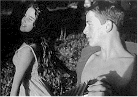Not since
the advent of Godard and Truffaut has a first feature about disaffected youth drawn such
rave notices as young French director Manuel Prada's Marie baie des anges (European
Film Market). On a French Riviera strangely bereft of adults, sullen 15-year-old petty
thief Orso (Frédéric Malgras) finds his muse in 14-year-old Bardot lookalike Marie
(Vahina Giocante), who entertains American servicemen nearby. Fragmented, hallucinatory
and engrossing, their adventures, far from exploitative, tap with authenticity into the
motiveless amorality that has societies fretting the world over. Pradal has made a savage
yet tender film ("Baie des anges" – Bay of Angels – is a rock
outcropping resembling twin angel shark fins) in which the sad fate of its protagonists
provokes a decisive understanding of the spiritual void that leads to their downfall. Breathless,
indeed. Marie baie des anges will be distributed in the United States by Sony
Pictures Classics, who apparently plan to release the film under it's original title,
perhaps hoping to capitalize on the movie's seductive mystique.
Motel Cactus (Forum) is an anomaly in the current South
Korean film scene, both for it's eye-catching visuals (by cinematographer Christopher
Doyle, very much in demand by Asian filmmakers) and the unique sensibilities of assistant
director-producer Park Ki-Yong, who makes a distinctive if somewhat exasperating
directorial debut. Essentially four episodes involving six characters who meet to have sex
in room 407 of the title flophouse (they're apparently called "Love Hotels" in
Seoul), the movie is stylish but often inscrutable, substituting camera movement and
chiarascuro for plot development – the angst-ridden characters are often inarticulate
anyway. "I don't think it's in many way foreign or non-Korean," the director
told an interviewer. "In fact, it contains many moments and images which are very
Korean... and which are exactly what I wanted." He may have gotten what he wanted,
but for the rest of the world Motel Cactus (winner of the New Currents Award at the
1997 Pusan Film Festival) may leave a very different kind of yearning.
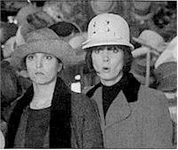French master Alain Resnais has been making movies
that are at once mischievous and magnificent for nearly half a century (a list that
includes Hiroshima Mon Amour, Last Year at Marienbad, Muriel and My
American Uncle), and what is perhaps most extraordinary about this extraordinary
filmmaker is that at the age of 76 anyone would be capable of making a movie as light yet
complicated, as sly yet spry, as the thoroughly enjoyable divertissement Same Old Song
(Competition). Fans of "The Singing Detective" will recognize this premise
immediately, and Resnais short-circuits that potential criticism by dedicating the film to
the late Dennis Potter. The story involves a group of people in and around Paris and their
tangled commitments, a narrative that is punctuated frequently by characters breaking into
straight-faced snippets of classic French pop songs (Jane Birkin even pops up in one scene
and does, you guessed it, a Jane Birkin song). While potential American distributors are
bound to be nervous due to the limited appeal of the music clips, they're just the
frosting on this delicious confection of miscommunication and yearning, as the lyrics of
each song manage to be far more eloquent than the often banal but never boring characters.
Delightfully unique, Same Old Song is a joy from beginning to end.
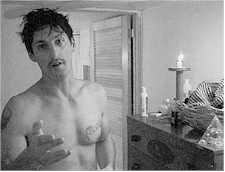Turn a German intellectual loose on the gay porn
scene in Los Angeles and you'll get a film like Sex/Life in L.A. (Panorama), in
which director Jochen Hick (who studied in Hamburg and Bologna through much of the 1980s)
leads the audience on a guided tour of nine men and their freewheeling lifestyles under
the Southern California sun. Subjects include gay movie superstar Matt Bradshaw,
supermodel Tony Ward (he used to date Madonna), photographer Rick Castro, performance
artist/masochist Ron Athey and various other wannabes whose stories are much less, ah,
inspiring. "I wanted to show the real people behind these sex icons," explained
Hick. The movie is interesting for those in to such things, but don't look for this
moderately explicit documentary to show up on public TV any time soon.
The raw power of writer-director Carine Adler's Under
the Skin (European Film Market) comes from her bold mixture of overused elements
– grainy photography, unmatched jump-cut editing, slow motion, trendy soundtrack
(think Massive Attack) – in the service of an original story acted with frightening
abandon by spectacular newcomer Samantha Morton, who plays a young woman distraught by the
death of her mother. 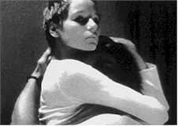As
the 19-year-old Iris sinks into a vortex of self-destructive behavior in an urban
environment consciously devoid of recognizable landmarks, it takes a great force of will
– following a final plunge – to pull Iris from her amoral void. "I set out
to represent a truly female experience on film," said Adler, who made shorts and
documentaries (including the similarly-themed Fever, with Katrin Cartlidge) after
graduating from London's National Film and Television School. "I wanted to write
something multi-faceted, to create a complicated character – an anti-heroine if you
like. So often in films, women are split into good or bad, defined along conventional
lines." Already the winner of prizes at the Toronto and Edinburgh festival, the
decidedly unconventional and noteworthy Under the Skin has screened to great
acclaim at the Venice and Sundance festivals and will be featured later in the spring at
the Film Society of Lincoln Center's New Directors/New Films program.
In Nicholas Barker's British-American co-production Unmade
Beds (European Film Market), four lonely New Yorkers share their hopes, dreams and
dating service adventures with the camera, punctuated with shots of skylines, or people
observed through apartment windows, or clouds, or personal hygiene products from each
character's bathroom – as well as the unmade beds that each seem to have. Variously
described by critics as "a fly on the wall turned into a vulture" and "the
most sadistic director in British television," Barker studied anthropology before
making his mark on British culture with the satiric BBC series "Washes Whiter,"
"Signs of the Times" and "From A to B." For this unashamedly
manipulative blend of fact and fiction ("an exercise in mendacity," he calls
it), Barker recruited a research staff to pose as singles to find these four, uh,
specimens. Courageous, cruel and monstrously funny, Unmade Beds is among the most
audacious feature film debuts of the year.
 Being at the European premiere of an American film –
especially a movie as American as Barry Levinson's David Mamet-scripted Wag the Dog (Competition) – always provides multiple
thrills. First, it's a blast of home after some time in another culture (and Wag the
Dog is nothing if not a wink-wink nudge-nudge blast of America); and second, it
affords the opportunity to see how such a movie "plays" to international
journalists (a word on this: as discerning as they like to see themselves, the global
community of movie critics goes nuts when they're in the same room – or anywhere near
– a recognizable American movie star. The Robert De Niro press conference was as
close to a riot as is possible without actually overturning anything). The movie itself,
winner of a Silver Berlin Bear (Special Jury Prize), seemed to be appreciated at least as
much for it's sheer star power as for the wry message of media manipulation that through a
trick of history parallels current events.
Being at the European premiere of an American film –
especially a movie as American as Barry Levinson's David Mamet-scripted Wag the Dog (Competition) – always provides multiple
thrills. First, it's a blast of home after some time in another culture (and Wag the
Dog is nothing if not a wink-wink nudge-nudge blast of America); and second, it
affords the opportunity to see how such a movie "plays" to international
journalists (a word on this: as discerning as they like to see themselves, the global
community of movie critics goes nuts when they're in the same room – or anywhere near
– a recognizable American movie star. The Robert De Niro press conference was as
close to a riot as is possible without actually overturning anything). The movie itself,
winner of a Silver Berlin Bear (Special Jury Prize), seemed to be appreciated at least as
much for it's sheer star power as for the wry message of media manipulation that through a
trick of history parallels current events.
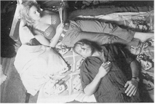Coincidentally, the alphabetical format of this
report allows the best to be saved until last: Tom Tykwer's sophomore effort (following
the affecting Deadly Maria), Winter Sleepers (New German Films) was easily
the high point of this year's festival, a complex, stunningly photographed wide-screen
drama in which the random acts of a group of only vaguely-related characters conspire with
fate and chance to produce shattering epiphanies for all concerned. In a tiny mountain
village, nurse Laura (Marie-Lou Sellem) shares her childhood home with attractive
translator Rebecca (Floriane Daniel), who often entertains her shallow ski instructor
boyfriend Marco (Heino Ferch). While visiting after a trip, Marco leaves his car door open
and the automobile is borrowed for a drive by slightly tipsy projectionist René (Ulrich
Matthes) – who is promptly involved in a horrible road accident with farmer Theo
(Josef Bierbichler). From there it is only a matter of time before little
misunderstandings lead to huge miscalculations: Rebecca and Marco bicker, Laura begins
dating the strange René, and tragedy is just around the corner. As hypnotic a film as has
been seen in recent memory, Winter Sleepers is for the receptive viewer an
overwhelmingly absorbing and rewarding experience, a disconcerting trip through randomness
that shows Tykwer to be in frighteningly authoritative control of the medium. Currently
without an American distributor, the film will show at a number of upcoming film
festivals, including Filmfest DC in the nation's capital.
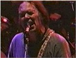Bonus Round: It is still entirely unclear what
it was doing there – particularly since it only screened once, and then in the
evening – but Jim Jarmusch's The Year of the Horse
(European Film Market) proved to be just the sonic break so desperately needed by the
motley group that wandered in after a particularly heavy movie to kill some time before a
festive meal. And when it was discovered that a member of the exhausted posse was seated
directly adjacent to the volume control on the back wall of the tiny theater, sonic
nirvana soon followed. There's nothing like a blast of home to refresh a weary traveller,
and beyond it's inestimable value as a document of some three decades in the musical life
of Neil Young and Crazy Horse, the movie served as a much-needed battery recharger in the
late innings of a festival that needs to be experienced to be completely appreciated.